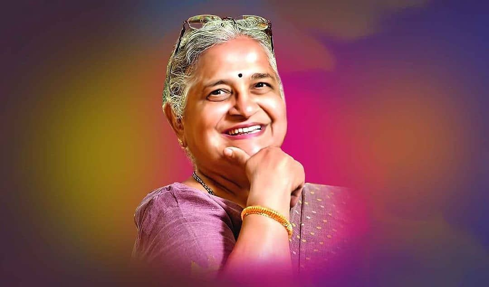

SUDHA MURTHY
A Philanthropist

Sudha Murty (Kulkarni; born 19 August 1951) is an Indian educator, author and philanthropist who is chairperson of the Infosys Foundation.
She is married to the co-founder of Infosys, N. R. Narayana Murthy. Murty was awarded the Padma Shri, the fourth highest civilian award in India,
for social work by the Government of India in 2006.Later in 2023, she was awarded the Padma Bhushan, the third highest civilian award in India.
Sudha Murty began her professional career in computer science and engineering. She is the chairperson of the Infosys Foundation and a member of the
public health care initiatives of the Gates Foundation. She has founded several orphanages, participated in rural development efforts, supported the
movement to provide all Karnataka government schools with computer and library facilities, and established Murty Classical Library of India at Harvard
University.Murty is best known for her philanthropy and her contribution to literature in Kannada and English. Dollar Bahu ( 'Dollar Daughter-in-Law'),
a novel originally authored by her in Kannada and later translated into English as Dollar Bahu, was adapted as a televised dramatic series by Zee TV in
2001.Runa ('Debt'), a story by Sudha Murthy was adapted as a Marathi film, Pitruroon by director Nitish Bhardwaj. Sudha Murthy has also acted in the film
as well as a Kannada film Prarthana.
Sudha Murthy Awards and Accolades
- Indias fourth-highest civilian honour Padma Shri in 2006.
- Gold medal from Indian Institute of Engineers, India.
- Cash award for securing highest marks in SSLC.
- Gold medal from Chief Minister of Karnataka Sri Devaraj Urs, for securing the highest marks in B.E in the state.
- CS Desai Prize for standing first in University of Karnataka.
- Best Teacher Award in 1995 by Rotary Club of Karnataka.
- Ojaswini award for excellent social work for the year 2000.
- Millenium Mahila Shiromani award.
- R.K. Narayans Award of Literature.
- Honorary LLD for her contribution to promoting formal legal education and scholarship in India.
- Life Time Achievement Award at the Crossword-Raymond Book Awards.
- “Hemmeya-Kannadiga” award from television.
- IIT Kanpur awarded her Honorary degree of Doctor of Science.
“Vision without action is merely a dream. Action without vision is merely passing time. But vision and action together can change the world.”